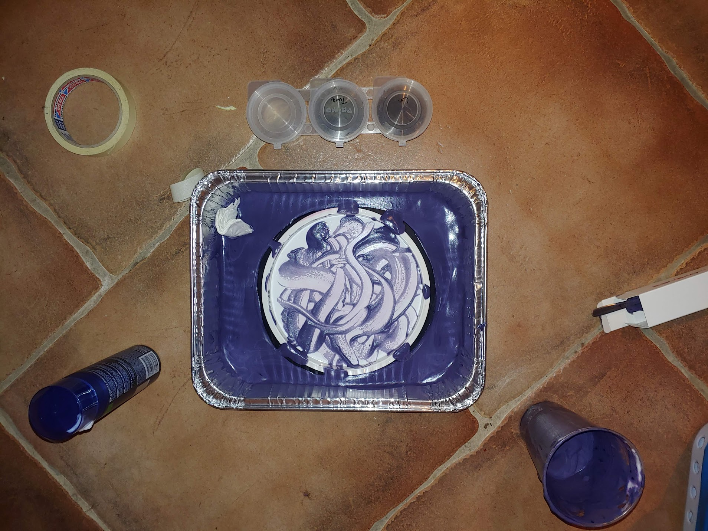

3D printing and 3D scanning
Assignment 2 is divided in two parts
As a frisbee golf player, It would be practical for me to use this opurtunity to cut out vinyl templates for colouring my discs. I want have two designs I want. One is a positive template of a relay network or orbit as the disc it is meant for is called Relay. The other design is meant for a disc called Wraith and the design for it is a character from the video game Enter the Gungeon. The other design is for a disc called Relay and is a few orbs meant to be a sun and a few planets that are aesthetically pleasing. The two pictures I want to use as templates are the following:
Template 1 (planets) Template 2 (Beholder)These pictures were uploaded into Inkscape and the outlines selected. The thickness of them was set to 0.02 mm and the file exported as a pdf-file. The material used was a matte black vinyl.
 Vinyl cutouts
Vinyl cutouts
Masking tape was used to transport the cutout from the white sheet to the disc. Before sticking the vinly to the disc, it was cleand with soap and water, dried and then cleaned again with isopropyl alcohol. The vinyl was stuck to the disc and the masking tape could be peeled off.
 Vinyl cutouts
Vinyl cutouts
The disc was then placed in a bed of shaving cream mixed with Fabric color for synthetic materials and left for about 10 hours.
Disc in Bed of coloring agentthe disc was then washed with water and the vinyl design peeled off. The outcome of this process was a dark pinkish red disc with the intended design in white.
 Finished design
Finished design
First of we needed to perform a KERF test on the lazer cutter. A short report on the KERF test can be found on my team members website. My first idea was designing a plant shelf that could hang on a wall. this would have to hold together only by press fitted material. This would mean that the shelf will be have to be heavily reinforced in order to hold reliably together. This convinced me to instead design a small standing shelve. Perhaps one where larger pots could be placed above a smaller segment containing seedlings. That would allow excess water from the pots could leak down to water the seedlings.
A few things need to be considered before the designing process can begin: The material used needs to be able to withstand being soaked in water so using plastics instead of wood be preferable. The weigth of the upper pots means that the shelve will be top heavy, in order to counter that, the base of the shelve needs to be relatively thick. Lastly the amount of material used is limiting. I began by making a exact model of the flower pots I had at home and weighed them. They weighed together around 500 grams with plants, being recently watered. Below you can see the first draft of the shelf.

This seemed to work but before I could keep developing the design I made a simple structural simulation in Fusion 360. I did this by Setting the material of the shelf to clear acrylic, constrained the bottom of the feet of the shelf and put a force of 10N (2x the required ) on the top part. This gave this result
 Simulation of force on shelf 1
Simulation of force on shelf 1
The displacement of the shelf is negligible especially since the actual force distribution is not so uniform, but rather closer to the edges, minimizing the effect of the pots weight. Next version had the bottom shelf for the seedlings which still seemed to hold up with a safety factor of atleast 15 and minimal displacement.

The next step was getting rid of zones on the sides of the shelf which were not very affected by the load. A triangle was cut from the bottom feet and from the middle of the side, above the lower shelf.

Again the effects of the load were minimal. I settled on this design and began exporting the file to a format that the lasercutter could take. I used this video as a guide on how to do that.
3D printing and 3D scanning